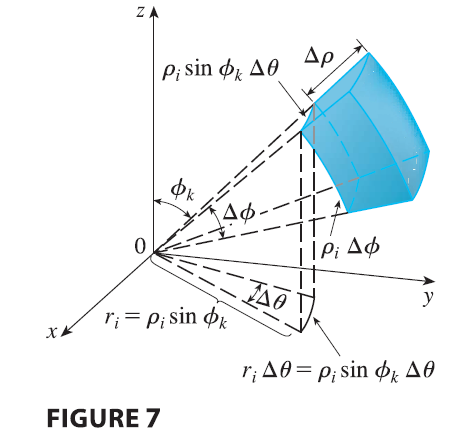
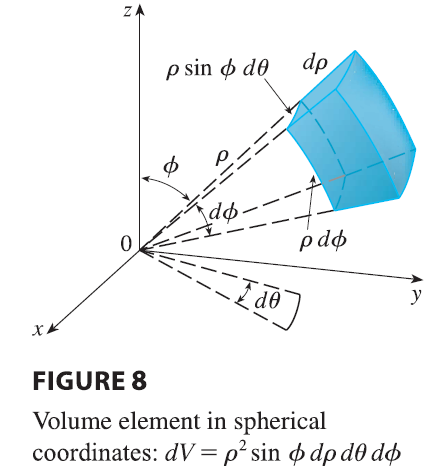
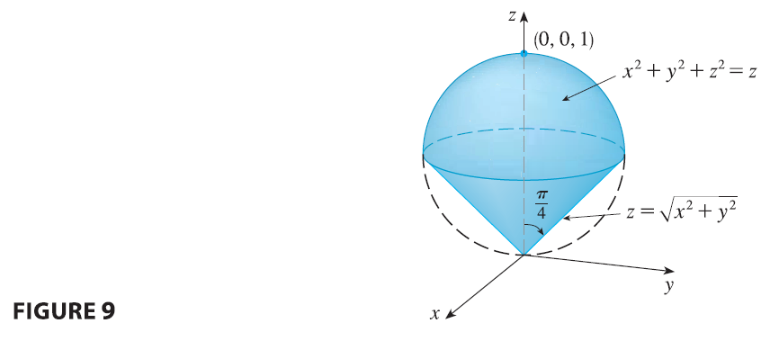

In the spherical coordinate system the counterpart of a rectangular box is a spherical wedge \[ E = \{(\rho, \theta, \phi) | a \le \rho \le b, \alpha \le \theta \le \beta, c \le \phi \le d\} \] where \(a \ge 0\) and \(\beta - \alpha \le 2\pi\), and \(d-c \le \pi\). Although we defined triple integrals by dividing solids into small boxes, it can be shown that dividing a solid into small spherical wedges always gives the same result. So we divide E into smaller spherical wedges \(E_{ijk}\) by means of equally spaced spheres \(\rho = \rho_i\), half-planes \(\theta = \theta_j\), and half-cones \(\phi = \phi_k\).

Figure 7 shows that \(E_{ijk}\) is approximately a rectangular box with dimensions \(\Delta\rho\), \(\rho_i \Delta\phi\) (arc of a circle with radius \(\rho_i\), angle \(\Delta\phi\)), and \(\rho_i \sin\phi_k \Delta\theta\) (arc of a circle with radius \(\rho_i \sin\phi_k\), angle \(\Delta\theta\)). So an approximation to the volume of \(E_{ijk}\) is given by \[ \Delta V_{ijk} \approx (\Delta\rho)(\rho_i \Delta\phi)(\rho_i \sin\phi_k \Delta\theta) = \rho_i^2 \sin\phi_k \Delta\rho \Delta\theta \Delta\phi \] In fact, it can be shown, with the aid of the Mean Value Theorem (Exercise 49), that the volume of \(E_{ijk}\) is given exactly by \[ \Delta V_{ijk} = \tilde{\rho_i}^2 \sin\tilde{\phi_k} \Delta\rho \Delta\theta \Delta\phi \] where \((\tilde{\rho_i}, \tilde{\theta_j}, \tilde{\phi_k})\) is some point in \(E_{ijk}\). Let \((x_{ijk}, y_{ijk}, z_{ijk})\) be the rectangular coordinates of this point. Then \[ \iiint_E f(x, y, z) dV = \lim_{l,m,n \to \infty} \sum_{i=1}^l \sum_{j=1}^m \sum_{k=1}^n f(x_{ijk}, y_{ijk}, z_{ijk}) \Delta V_{ijk} \] \[ = \lim_{l,m,n \to \infty} \sum_{i=1}^l \sum_{j=1}^m \sum_{k=1}^n f(\tilde{\rho_i}\sin\tilde{\phi_k}\cos\tilde{\theta_j}, \tilde{\rho_i}\sin\tilde{\phi_k}\sin\tilde{\theta_j}, \tilde{\rho_i}\cos\tilde{\phi_k}) \tilde{\rho_i}^2 \sin\tilde{\phi_k} \Delta\rho \Delta\theta \Delta\phi \] But this sum is a Riemann sum for the function \[ F(\rho, \theta, \phi) = f(\rho\sin\phi\cos\theta, \rho\sin\phi\sin\theta, \rho\cos\phi)\rho^2\sin\phi \]
Consequently, we have arrived at the following formula for triple integration in spherical coordinates. \[ \iiint_E f(x, y, z) dV = \int_c^d \int_\alpha^\beta \int_a^b f(\rho\sin\phi\cos\theta, \rho\sin\phi\sin\theta, \rho\cos\phi)\rho^2\sin\phi d\rho d\theta d\phi \tag{3} \] where E is a spherical wedge given by \[ E = \{(\rho, \theta, \phi) | a \le \rho \le b, \alpha \le \theta \le \beta, c \le \phi \le d\} \]
Formula 3 says that we convert a triple integral from rectangular coordinates to spherical coordinates by writing \[ x = \rho\sin\phi\cos\theta \qquad y = \rho\sin\phi\sin\theta \qquad z = \rho\cos\phi \] using the appropriate limits of integration, and replacing dV by \(\rho^2\sin\phi d\rho d\theta d\phi\). This is illustrated in Figure 8.

This formula can be extended to include more general spherical regions such as \[ E = \{(\rho, \theta, \phi) | \alpha \le \theta \le \beta, c \le \phi \le d, g_1(\theta, \phi) \le \rho \le g_2(\theta, \phi)\} \] In this case the formula is the same as in (3) except that the limits of integration for \(\rho\) are \(g_1(\theta, \phi)\) and \(g_2(\theta, \phi)\). Usually, spherical coordinates are used in triple integrals when surfaces such as cones and spheres form the boundary of the region of integration.
EXAMPLE 3 Evaluate \(\iiint_B e^{(x^2+y^2+z^2)^{3/2}} dV\), where B is the unit ball: \[ B = \{(x, y, z) | x^2+y^2+z^2 \le 1\} \]
EXAMPLE 4 Use spherical coordinates to find the volume of the solid that lies above the cone \(z = \sqrt{x^2+y^2}\) and below the sphere \(x^2+y^2+z^2=z\). (See Figure 9.)
